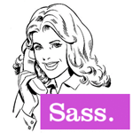

¿Que puedo hacer por ti?
Mi objetivo es crear presencia de calidad en internet para mis clientes.
Diseño Web
El diseño no es solo como se ve, es como funciona. Pensando en la facilidad para el usuario como objetivo y en el contenido como protagonista sin olvidar la imagen de marca.
Desarrollo Web
El diseño para la web y dispositivos se hace realidad codificando en lenguajes de marcado y de programación como HTML5, CSS3, y JavaScript.
Web Adaptable
El modo de ver la web ha cambiado y no hay vuelta atrás, una web actual debe de adaptarse a cualquier dispositivo. Hacer zoom no es divertido!
Servicios de diseño web
Que hay en tu web standard recien sacada de la caja?
Empezarás con buen pie tu andadura digital, el nombre de dominio de tu empresa apuntará a una web moderna y actual, con un diseño cuidado y totalmente adaptada a dispositivos móviles, donde se mostrarán tus productos o servicios de forma clara.
También se incluye un formulario de contacto para que tus clientes puedan contactarte.
Tendrás una targeta de presentación siempre disponible y visible en internet desde cualquier sitio y dispositivo.
Todo lo que incluye una web Standard:
- Diseño personalizado
- Diseño adaptable a dispositivos móviles
- Hasta cinco secciones
- Galería de fotos o SLide Show
- Optimizada para SEO
- Código Google Friendly
- Formulario de contacto
- Google maps

Para los que quieren más de su web.
- Necesitas actualizar los contenidos de tu web amenudo y quieres hacerlo tu mismo?
- Pensando en montar una tienda online?
- Buscas la mejor experiencia de escritura y lectura para tu blog?
Diseño Web con Wordpress
La ventaja de utilizar un CMS (Content Management System), es que tu mismo podrás actualizar y gestionar los contenidos de tu web desde el panel de administración, sin saber nada de programación.
Cualquier tipo de web que necesite actualizarse de forma fácil e intuitiva puede hacerse en wp, ya sea un sitio comercial, informativo o una tienda online y por supuesto también puedes hacer un Blog!
Wordpress lleva mucho tiempo en escena y hoy en día existen pluguins para casi todo: SEO, anti spam, Back-ups, Google analitics, tienda online etc…
Si necesitas un theme de wp responsive personalizado, teniendo en cuenta tu imagen de marca, cuenta conmigo para ello.
Tienda Online
Abre tu negocio 24 horas al día!!
Estoy especializado en Wordpress, y ahora gracias al pluguin Woocommerce, puedo crear tu tienda online con el gestor de contenido que más me gusta.
Carro de la compra, analíticas de ventas, gestión de pedidos, gestión de stock, gestión de pagos mediante Paypal, tarjeta de crédito (pasarela de Paypal) y sistema de newsletter.
Atrévete con una nueva y refrescante experiencia de Blogging con Ghost!
Ghost es una innovadora y excitante plataforma de blogging de código abierto, que se centra en crear una agradable experiencia de escritura y lectura.
Ghost es una plataforma creada para una sola cosa: publicar.
Puedo crear un theme de Ghost personalizado para ti.
Elementos gráficos y características técnicas que comparten todos los proyectos de Netinetidesign.
Diseño exclusivo
Por que la primera impresión es lo que cuenta.
Para crear una imágen limpia y atractiva utilizo:
- Tipografías de Fontsquirrel o de Google fonts.
- Iconografías de Icomoon o Weloveicons.
- Para hacer un buen uso del color, utilizo: Adobe Kuler.
Ok, También tengo conocimientos básicos de tipografía, psicología de color y teoría del diseño, composición, simetría, armonía, contraste etc..
Diseño adaptable
A día de hoy es inconcebible que una web no esté adaptada a dispositivos móviles.
Cuál es mi secreto para crear diseños adaptables?

Foundation5
El framework front end responsive más avanzado del mundo.
El framework front end responsive más avanzado del mundo.
Bootstrap for Sass
El framework más popular para desarrollar proyectos responsive movile first en la web.
El framework más popular para desarrollar proyectos responsive movile first en la web.
Compass
Compass es un framework que te ayuda a exprimir el potencial de Sass.
Compass es un framework que te ayuda a exprimir el potencial de Sass.

Ok, Estás herramientas facilitan mucho el trabajo pero sin conocimientos de CSS, SASS y uso de Media Queries etc.. no harías gran cosa con ellas.
Elementos interactivos
Los elementos interactivos normalmente se crean con Javascript y jQuery y mejoran considerablemente la experiencia de usuario.
Bootstrap o Foundation ya llevan incorporados muchos de estos componentes para incluirlos fácilmente en tus proyectos,
pero si no tienen exactamente lo que necesitas, encantado pondré en práctica mi kunfu de JavaScript para modificarlo o crearlo de nuevo.
Que elementos interactivos puedo incluir en tu página web?
- Galerías de fotos
- SlideShows
- Bloques expandibles
- Carrousels
- Acordeones
- Modales
- Pestañas
Google maps
Esto es opcional pero si necesitas que tus clientes te encuentren físicamente, es recomendable incluir Google Maps en tu formulario de contacto.
Velocidad!
El mundo de la web requiere velocidad, la gente no va a tener paciencia para esperar a que carge una web lenta a causa de fotos pesadas o un código sin optimizar.
Utilizo herramientas como PageSpeed Insights o YSlow y sigo sus sugerencias.
Estrategía de Marketing Online
Ok, soy un Geek y mi pasión es diseñar, escribir código y crear sitios web responsive alucinantes, pero comprendo que esto no te excite demasiado.
Seguramente, estás más interesado en:
- Dar a conocer tu negocio a clientes potenciales.
- Aparecer en los primeros puestos en las busquedas de Google.
- Mejorar tu imágen de marca.
Resumiendo, que el dinero y energía que has invertido en la creación de tu sitio web se vea recompensado en más clientes o más ventas.
No soy experto en maketing online, ni es mi intención convertirme en uno, pero si hay cuatro cosas básicas que puedo hacer por ti al respecto:
- Asesoramiento SEO Básico.
- Incluir Google analytics en tu página web.
- Dar de alta tu web en los principales buscadores, Google, Bing y Yahoo.
- Añadir palabras clave.
Te voy a contar un secreto, lo mejor que puedes hacer por mejorar el SEO de tu web es crear contenido relevante.
En el caso de que necesites una estrategia de marketing digital más compleja, puedo asesorarte o pedir presupuesto por ti.


{kind=link}
{kind=link}
{kind=link}
Proceso creativo
Cada proyecto es único y tiene sus propias necesidades y características, pero hay pautas que suelen repetirse en el proceso de creación de un nuevo sitio web.
Bases
Quedar y conocernos, ya sea en persona o a través de Hangout de Google y empezar a trabajar juntos en los fundamentos de tu proyecto.
Definir las características y objetivos principales de tu web e identificar el público objetivo.
Investigación
Zambullirse en el mundo de tu negocio y empaparse de sus características, analizar la competencia para ver como está el mercado y encontrar inspiración relevante.
Prototipo
Realizamos los primeros bocetos en papel y el wireframe inicial para definir la estructura de la web, la arquitectura de la información y la navegación, todo lo necesario para garantizar una buena experiencia de usuario.
Diseño
Añadimos los elementos gráficos que harán que tu web luzca como se merece.
- Escala de colores.
- Tipografías.
- Iconografía.
- Texturas.
- Fotografías.
Desarrollo
Una vez sabemos lo que queremos es hora de zambullirse en el código y convertir el diseño en una web que funcione correctamente en todos los navegadores web modernos y dispositivos móviles.
Lanzamiento
Tenemos el producto final en las manos, el esfuerzo a valido la pena, es hora de celebrarlo y compartirlo con el mundo!
Tarifas de diseño web responsive
Precios
Cada proyecto es único, por lo que hacer presupuestos genéricos es difícil, lo mejor es que te pongas en contacto conmigo y me cuentes de que trata tu proyecto para que pueda hacerte un presupuesto personalizado.
- Micro Landing Page
- 499€
- Micro Landing-Page
- Responsive
- Web estática
- a partir de 1 semana
- 10 horas diseño
- 20 horas desarrollo
- 2 horas soporte
- hasta 3 secciones
- Formulario de contacto
- Web Standard
- 699€
- Web Awesome
- Responsive
- Web estática
- a partir de 2 semanas
- 15 horas diseño
- 30 horas desarrollo
- 3 horas soporte
- hasta 5 secciones
- Formulario de contacto
- Web Avanzada
- 1299€
- Web Autogestionable
- Responsive
- Web dinámica
- a partir de 4 semanas
- 20 horas diseño
- 60 horas desarrollo
- 5 horas soporte
- hasta 10 secciones
- Formulario de contacto